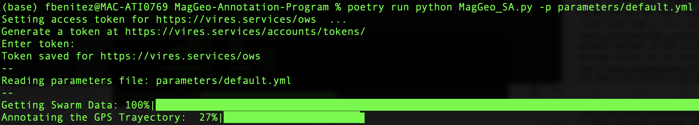
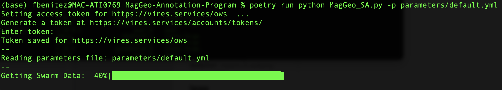

Using MagGeo
1. Run MagGeo using the sample data.
MagGeo can be excuted using the same terminal you have been using in the previous steps. If you want to get familiar with MagGeo and get an annotated GPS trajectory using the data we have included as an example (data folder), run the following command (replace your virES token where is requiered):
python MagGeo_main.py -p parameters/default.yml --token YOUR_TOKEN_HERENow MagGeo will start to download the Swarm Data.

Once the data has been downloaded, MagGeo will process it to make the annotation process ( for more information about how this is done, visit our methodological paper in Movement Ecology)
The last step MagGeo does is annotating the gathered data, that would take more time depending how big is your dataset. In our example it only takes 4 seconds.

And Congrats you got annotated data. The results will be stored in the folder results for your futher analysis. You will find a .csv file named like GeoMagResult_+name_of_your_csv_file_trajectory.
2. Run MagGeo using your data.
If you are ready to annotate your GPS trajectories. You need to update the parameters file in MagGeo to let the program know what are the correct values of your data.
- Copy the csv file with your trajectories into the data folder.
- Open and Update the following parameters in the file
default.ymllocated in parameters folder: gpsfilename: "name_of_your_trajectory.cvs"Include the name of your Input data. The GPS trajectory you need to annotate with the geomagnetic satellite data.Lat: "latitude_column_name_in_your_trajectory"Long: "longitude_column_name_in_your_trajectory"DateTime: "Date_Time_column_name_in_your_trajectory"make sure you have one column that includes Date and Time values together.altitude: "altitude_column_name_in_your_trajectory"if you do not have any altitute column, you can leave that in blank, including only""
Save your changes, return to the Terminal and run:
python MagGeo_main.py -p parameters/default.yml --token YOUR_TOKEN_HERE3. Run MagGeo step by step, using Jupyter Notebook.
MagGeo includes a set of Jupyter Notebooks, you will find four notebooks (.ipynp) in the Notebooks folder.
In a Terminal, make sure you are using
MagGeoEnvenvironment, and run:
jupyter notebookA Jupyter Notebook dashboard will comes out in your browser locally (e.g. http://localhost:8888) then you can explore MagGeo and its content. Go to Notebooks folder and open any of the following notebook for a step by step process. You can add cells to make your own test or analysis, but be aware that any change you do at the code migth affects the correct performance of the program.
- Main Notebook : An initial and descriptive notebook where you can get detail information about MagGeo, the sample data used, background concepts and software requirements.
- Sequential Mode: Annotation Notebook applying a sequential mode. Using a traditional loop to going through the GPS track rows and process every row computing the magnetic components. Particularly useful for small datasets.
- Parallel Mode: If you have a “big” dataset ( e.g. 1 million of records) you might want try the parallel mode. The parallel mode has some differences when you run the required libraries in a windows or Linux environment. We have tested MagGeo in a windows server environment.
- Notebook basics: If you are not familiar with Jupiter Notebooks and want to learn about the basics over how to run the notebooks before try the annotate tool. You can try this notebook to get the basics elements to run cells, read data, and plot some a basic chart.
The following image will help you to understand how the sequential and parallel mode differ, and how in parallel mode you should be able to use the full capacity of your machine. However it is quite important to identify when we need to use a parallel mode. For small datasets running MagGeo in Parallel mode could be even slower than the sequential mode.